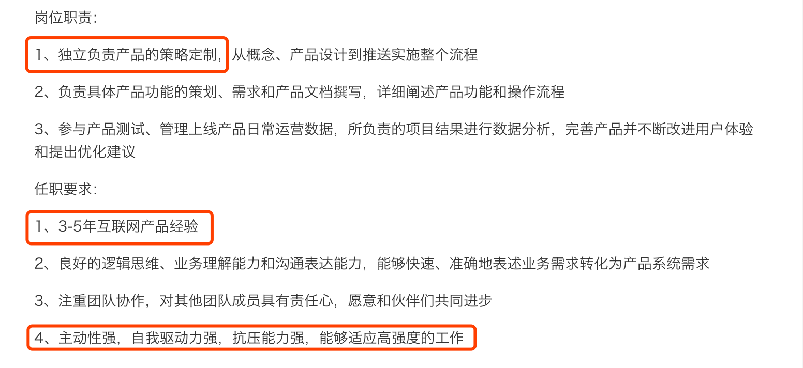

02 读懂职位 JD，精准投递简历
你好，我是你的面试课老师杨宇堃，欢迎进入第 02 课时的内容“读懂职位 JD，精准投递简历”。
1.清晰的了解用人部门的招聘要求
上一讲是关于如何设计简历，相信大部分小伙伴可以很轻松的掌握，但这只是投递简历前的一个开始，明确工作方向才是真正的关键点。 很多小伙伴在投递简历的时候，很少仔细阅读招聘公司的招聘简章，只是投递出去了，甚至一个岗位投递多次或者一个公司投递多个岗位，尤其在刚刚毕业的小伙伴身上表现非常明显。可能大部分人会认为多投递几次会被面试官看中的几率更高，但往往是相反的，如果你自己的工作内容与职位的内容完全没有关联，只会被 HR 淘汰掉，然后放进简历库，而且目前很多公司在简历库里都会对投递来不合适的简历做备注，下次使用简历的时候面试官也会查看上次的评价。
Tips：如果不想在心仪的公司里面留下污点，建议谨慎地投递简历。
需要注意，投递的内容除了职位描述以外，还需要留意公司对人才的工作年限要求和工作的职级。例如，经常看到一些刚刚工作 1 年左右的小伙伴，直接投递公司需要 8 年以上要求的总监岗位。这样会给 HR 留下非常不好的印象，会认为这份简历的候选人对自己的定位非常不清晰，甚至有时候会觉得比较浮躁。
第一印象一旦形成是非常难改变的，所以建议各位小伙伴在投递简历时一定要做好两个准备：
- 要对投递的公司做好充分的了解，清晰地知道自己投递公司的业务是否和自己的发展方向一致；
- 投递的岗位是否与你之前的工作内容相符合。
一份满足以上条件的简历才会获得用人公司的邀请。
下面是一个某公司“产品经理”的招聘要求：

通过上面的职位描述，有几点可以注意一下：
- 在职位描述中，不断提到需要具有“独立负责…”、“负责具体…”等字样，说明这个岗位需要你能独立完成一些项目。如果你还是一个需要别人带着干活的话，最好不要盲目投递哦。
- 职位要求年限，这是一个要求有工作经验的岗位，比如需要具备 3 ~ 5 年的工作经验。往往 HR 希望求职者最好有 5 年左右的工作经验，具有 3 年工作经验是最低的要求。如果你的工作经验低于 3 年的话，就不要考虑尝试了，即使投递了也会被刷掉。
- 任职要求中的第4点，说明这份工作的强度非常大，成长性也很高。如果你是一个不希望太大工作强度或者想找一份轻松工作的小伙伴，也要好好的思考一下哦。
建议：在投递简历的时候一定要注意 HR 在职位描述中的用词和一些细节，这样才能更准确地投递到心仪的岗位，进而获得一份满意的录用通知书。
2.最合理的助攻来自自己内心的力量
好的简历内容并不是通过简单地编写就可以实现了，一定是通过每天的努力工作和不断地反思才实现的。所以，即使简历构思再完美、逻辑再缜密，如果不是自己亲身经历和努力付出过的项目经验都会很容易的被发现漏洞。
一定要认真的对待自己的工作，每次的工作变动也要对自己的职业规划做好充分思考，这样才会拥有一份完美的简历和一份完整的职业规划。
可能很多刚刚毕业的小伙伴会问：“我没有工作经历，也不知道自己做什么。如果我不去尝试怎么可能知道自己适合什么呢？”其实很多小伙伴在大学读的专业也就已经明确了自己可以从事的方向，当然如果你认为自己读的专业不是你喜欢的，也许可以选择管培生的岗位，用 1 年的时间去体会各个岗位也许会对你有所帮助。
而对于工作 2 ~ 5 年的小伙伴，相信你们已经在一个岗位上至少工作了 2 年以上，如果这个时候还在反复，此时需要慎重的思考一下自己的规划了。